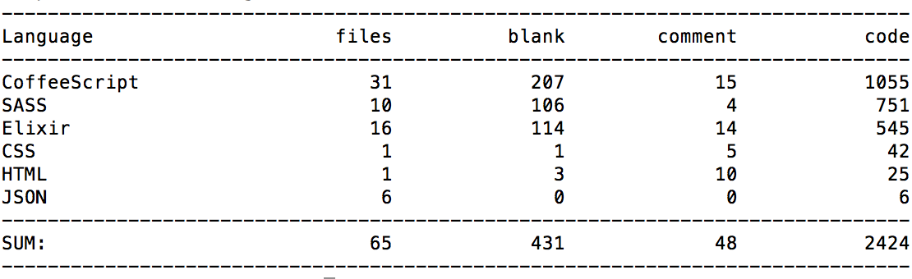

Fun with processes
The actor model and its facilities using OTP
by @tulinmola
Some concepts: Concurrency VS Parallelism
The actor model
In response to a message an actor can:
- Make local decisions
- Create more actors
- Send more messages
- Determine how to respond to the next message received
Note that: actors can only affect each other through messages.
Elixir/Erlang processes 1/3
- Everything is a process
- Processes are strongly isolated
- Process creation and destruction is a lightweight operation
Elixir/Erlang processes 2/3
- Message passing is the only way for processes to interact
- Processes have unique names
- If you know the name of a process you can send it a message
Elixir/Erlang processes 3/3
- Processes share no resources.
- Error handling is non-local.
- Processes do what they are supposed to do or fail.
Joe Armstrong's' PhD thesis

Everything runs in a process
The console example:
$ iex
Erlang/OTP 19 [erts-8.2.2] [source] [64-bit] [smp:4:4] [async-threads:10] [hipe] [kernel-poll:false] [dtrace]
Interactive Elixir (1.4.2) - press Ctrl+C to exit (type h() ENTER for help)
iex(1)> self()
#PID<0.80.0>
iex(2)> Process.exit(self(), :normal)
** (EXIT from #PID<0.80.0>) normal
Interactive Elixir (1.4.2) - press Ctrl+C to exit (type h() ENTER for help)
iex(1)> self()
#PID<0.83.0>
Creating a process
iex(1)> pid = spawn(fn -> IO.puts "Hello from process" end)
Hello from child process
#PID<0.82.0>
iex(2)> Process.alive?(pid)
false
Receiving messages
iex(1)> pid = spawn(fn ->
...(1)> receive do
...(1)> {:msg, text} -> IO.puts "Received #{text}"
...(1)> end
...(1)> end)
#PID<0.86.0>
iex(2)> send(pid, {:msg, "hello"})
Received hello
{:msg, "hello"}
iex(3)> Process.alive?(pid)
false
Staying alive
defmodule Greeter do
def loop() do
receive do
{:msg, text} -> IO.puts "Received #{text}"
end
loop()
end
end
iex(1)> pid = spawn(&Greeter.loop/0)
#PID<0.86.0>
iex(2)> send(pid, {:msg, "hello"})
Received hello
iex(3)> send(pid, {:msg, "world"})
Received world
Keeping state
defmodule Counter do
# ...
def loop(counter) do
receive do
:count ->
IO.puts "Counter is #{counter}"
loop(counter + 1)
_ ->
loop(counter)
end
end
end
Process lifecycle

OTP to the rescue
The “Open Telecom Platform”
OTP abstractions


Multiplayer online
Shall we play a game?

OTP abstractions (revisited)
Agent example: Dictionary
defmodule QwordsEngine.Dictionary do
def start_link(locale) do
Agent.start_link(fn -> load(locale) end)
end
def random_word(dictionary) do
Agent.get(dictionary, fn words -> Enum.random(words) end)
end
defp load(locale) do
:qwords_engine
|> Application.app_dir("priv/dictionaries/#{locale}.txt")
|> File.read!()
|> String.split("\n")
end
end
GenServer example: Game 1/3
defmodule QwordsEngine.Game do
use GenServer
defstruct [name: "", word: "", size: 4, board: nil, players: [],
num_players: 2, max_score: 5]
def find_by_name(name) do
:global.whereis_name(name)
end
def start_link(state) do
GenServer.start_link(Game, state, name: {:global, state.name})
end
# more code...
end
GenServer example: Game 2/3
defmodule QwordsEngine.Game do
# ...
# Client
def count(game), do: GenServer.call(game, :count)
# Server (callbacks)
def handle_call(:count, _from, state) do
{:reply, length(state.players), state}
end
# more code...
end
GenServer example: Game 3/3
defmodule QwordsEngine.Game do
# ...
# Client
defp next_board(game), do: GenServer.cast(game, :next_board)
def broadcast(game, data), do: GenServer.cast(game, {:broadcast, data})
# Server (callbacks)
def handle_cast(:next_board, state) do
board = BoardFactory.create(state.word, state.size)
broadcast(self(), {:board, board})
{:noreply, %Game{state | board: board}}
end
# more code...
end
Qwords engine
Qwords interface
Working diagram
Lines of code
Thanks
Fun with processes

by @tulinmola